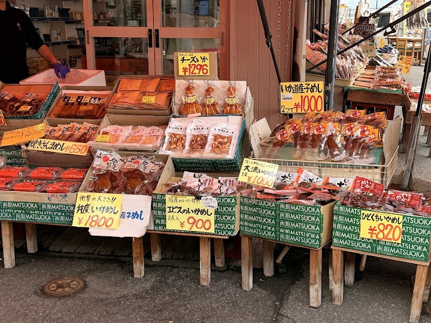
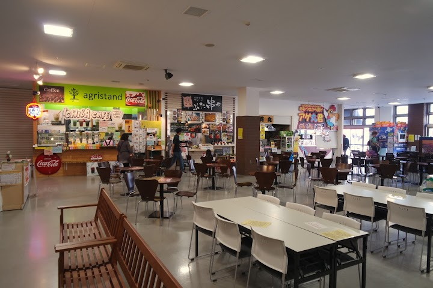
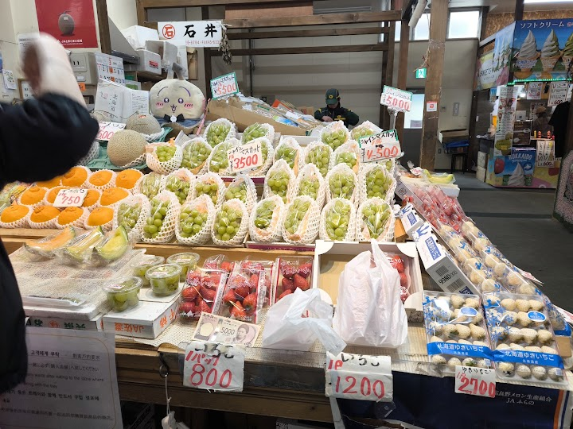
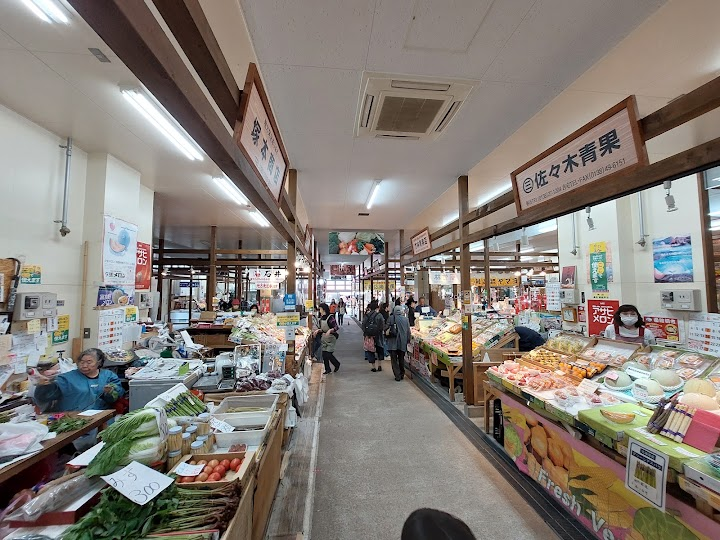
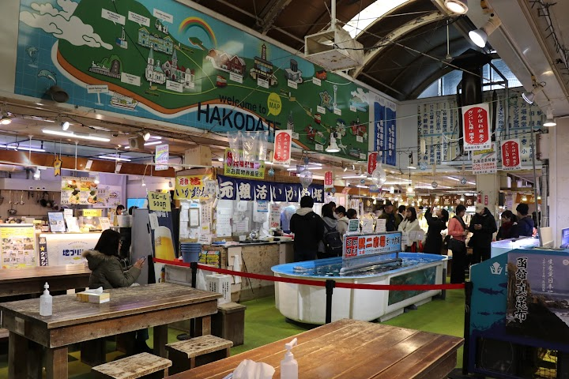

Hakodate Morning Market (suggested)
Open in Google Maps (street view, more photos and reviews there)






Visitor tips on finding it and getting there
If you'd like lots of fresh inexpensive seafood, especially salmon eggs. sea urchin eggs or snowcrab legs, then this is the place to visit. It opens at 6 AM (some shops were still closed at 6:45), and closes at 3;00 PM. Aneasy short stroll from Hakodate train station and the cruise terminal.